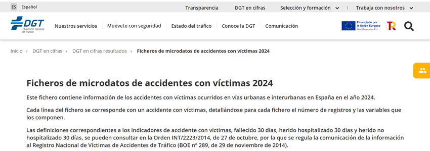

Accidentes de tráfico con víctimas en España - 2024 - dgt
Accidentes de tráfico con víctimas en España - 2024 - dgt
Accidentes de tráfico con víctimas en España - 2024 - dgt
Como tercera fuente de datos utilizada en el proyecto se emplea el conjunto de Microdatos de Accidentes de Tráfico con Víctimas (2024), publicado por la Dirección General de Tráfico (DGT).
Este conjunto de datos constituye una fuente oficial de información sobre la siniestralidad vial en España y contiene más de 101.996 registros, ofreciendo un elevado nivel de detalle sobre los accidentes con víctimas ocurridos durante el año 2024.
Ministerio del Interior. Dirección General de Tráfico (DGT). Datos abiertos de accidentes de tráfico con víctimas (2024).
Fecha de último acceso: 17 de julio de 2026
Acceder al portal oficial de la DGTLos microdatos proporcionan información detallada sobre las circunstancias del accidente, la localización geográfica, el tipo de vía, las condiciones meteorológicas, los vehículos implicados y las víctimas. Gracias a su gran volumen de registros y elevado número de variables, este dataset resulta especialmente adecuado para desarrollar prácticas de procesamiento distribuido mediante Hadoop.
| Característica | Valor |
|---|---|
| Organismo | DGT |
| Año | 2024 |
| Registros | 101.996 |
| Formato | CSV |
| Tipo | Datos estructurados |
La relevancia de este conjunto de datos radica en su carácter oficial y en el gran volumen de información disponible, lo que permite validar el funcionamiento de arquitecturas Big Data basadas en Hadoop. Los datos serán almacenados en HDFS y posteriormente procesados mediante trabajos MapReduce implementados con Hadoop Streaming, obteniendo métricas y patrones relacionados con la siniestralidad vial.
| Categoría | Ejemplos de variables |
|---|---|
| Identificación | ID_ACCIDENTE, ANYO, MES, DIA_SEMANA, HORA |
| Localización | Provincia, Municipio, Isla, Carretera, Punto kilométrico |
| Características de la vía | Tipo de vía, Titularidad, Zona, Nudo, Sentido |
| Accidente | Tipo de accidente, Vehículos implicados, Víctimas |
| Condiciones ambientales | Meteorología, Iluminación, Viento, Niebla |
| Prioridad y señalización | STOP, CEDA, Semáforo, Marcas viales |
| Víctimas | Fallecidos, Heridos graves, Heridos leves |
| Tipo de usuario | Peatones, Bicicletas, Motocicletas, Turismos, Autobuses |
Las definiciones de los indicadores utilizados en este conjunto de datos (accidente con víctimas, fallecido a 30 días, herido hospitalizado y herido no hospitalizado) se encuentran reguladas por la Orden INT/2223/2014, de 27 de octubre, que establece los criterios de comunicación de información al Registro Nacional de Víctimas de Accidentes de Tráfico.

Figura. Dataset oficial de accidentes de tráfico con víctimas publicado por la Dirección General de Tráfico (DGT).
El conjunto de microdatos de accidentes con víctimas de la DGT constituye una fuente oficial de datos estructurados especialmente adecuada para el aprendizaje de tecnologías Big Data. Su volumen de información y la diversidad de variables permiten desarrollar ejercicios completos de almacenamiento distribuido, procesamiento MapReduce, consultas mediante Hive y análisis estadístico sobre infraestructuras Hadoop.
El uso de Synthea™ proporciona un conjunto de datos clínicos completamente sintéticos, reproducibles y libres de restricciones de privacidad, constituyendo una base idónea para el desarrollo de prácticas de procesamiento distribuido mediante Hadoop, HDFS, MapReduce, Hive y Parquet dentro del entorno Big Data desarrollado en este proyecto.